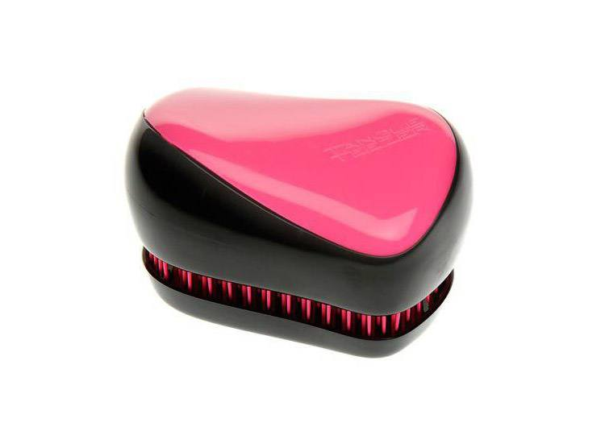
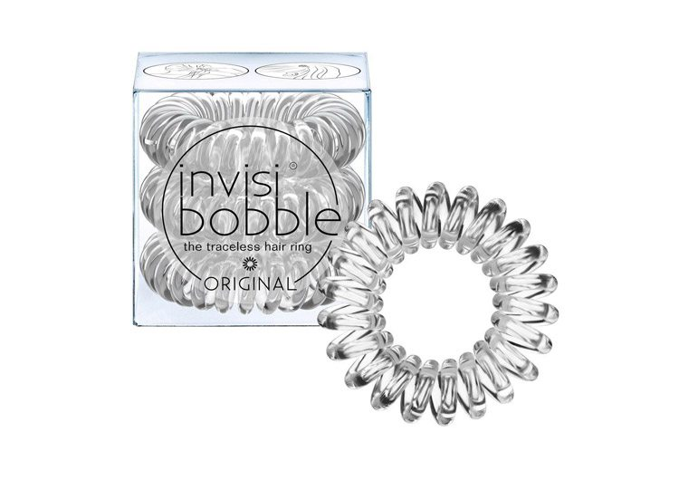
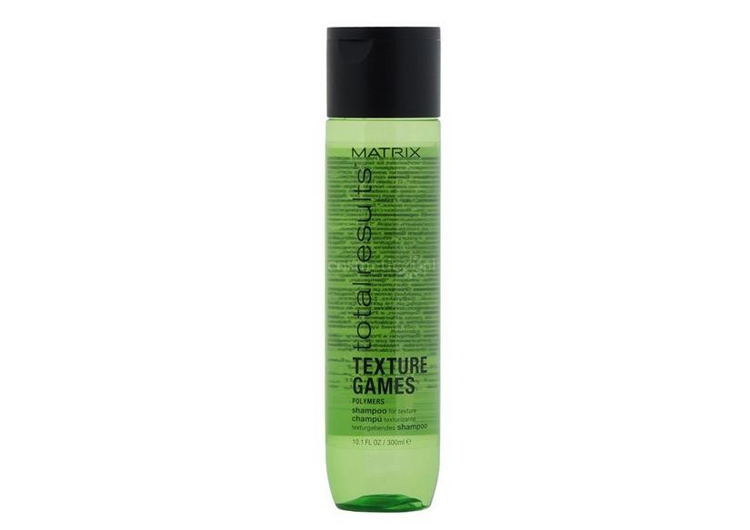

Расческа Tangle Teezer
 Начиная разговор о волосах, нельзя не упомянуть это средство. Правильный выбор расчески – залог
здоровья, роста и красоты волос. А эта расческа, которая помещается даже в самую маленькую сумку,
произвела на рынке настоящий фурор, и совершенно заслужено. Ее любят за возможность распутать и расчесать
даже самые запутанные и непослушные волосы. Мы – не исключение.
Кроме того, эта расческа совершенно не
травмирует: ей можно расчесать даже мокрые волосы, нанести при помощи нее кондиционер или маску на волосы
равномерно (согласитесь, руками это не всегда получается). Бонус – гигиеничность средства. Удобный футляр,
который закрывает зубчики расчески избавит кожу вашей головы от пыли и микробов.
Резинка для волос invisibobble
 Еще одно революционное средство, без которого сегодня сложно представить свою жизнь. У резинки для волос, которая напоминает провод, есть два ощутимых преимущества. Первое – она не травмирует волосы, не стягивает волосы на макушке, когда вы делаете высокий хвост, не оставляет «заломов», которые ухудшают их структуру. Второе – удобство в применении. Она практически незаметна на волосах: удобно делать объемный пучок, «спрятав» резинку и косы с интересными плетениями. Кстати, бренд выпустил свои варианты резинок для светловолосых и темноволосых девушек. А носить их на руке в качестве браслета давно стало новым трендом!Структурирующий шампунь Total Results Texture Games, Matrix
Редактор BeautyHack:
«Всегда беру с собой на тренировки – для меня это средство 2-в-1, хотя таковым не заявлено. Для того, чтобы быстро, но тщательно вымыть голову, а потом не мучаться с укладкой, его более чем достаточно – кондиционер будет лишним. Не спутывает волосы, дает объем и блеск волосам. Расходуется очень экономно – одной такой бутылки мне с моими длинными волосами может хватить на месяца».